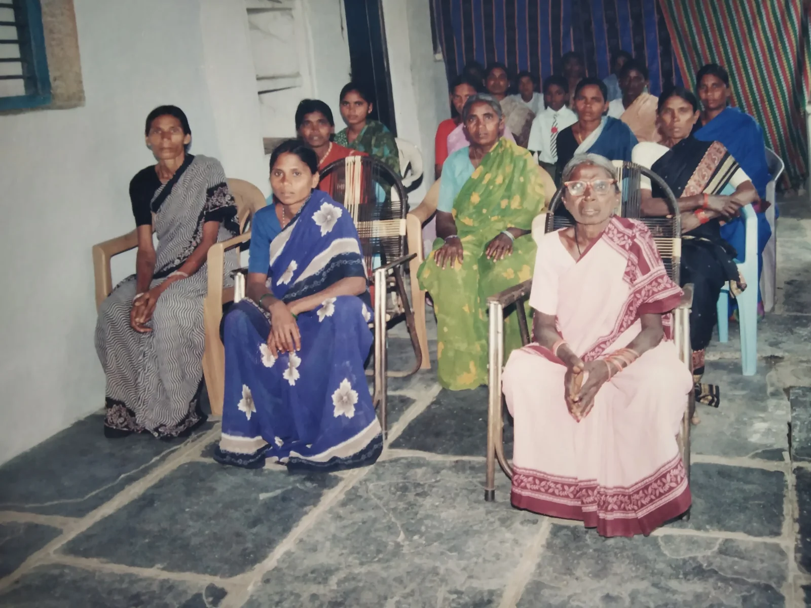
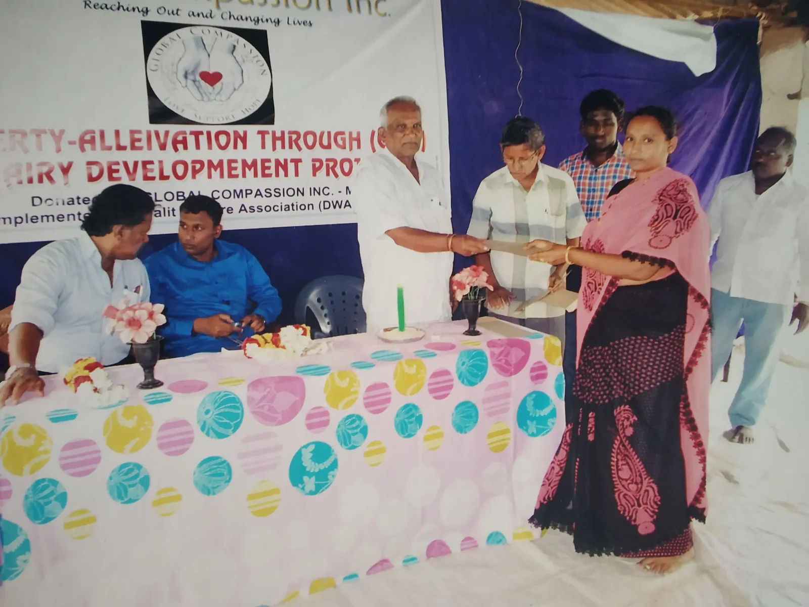
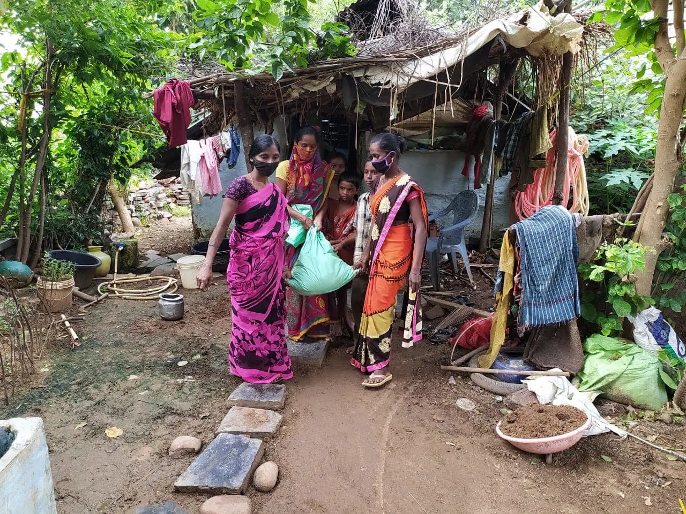
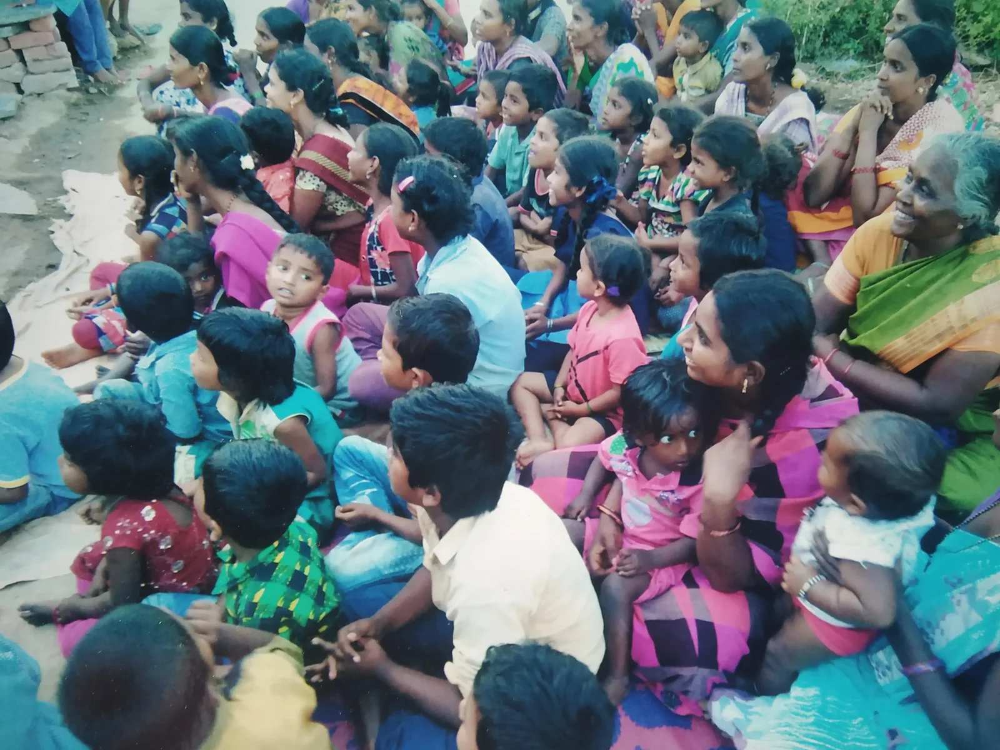
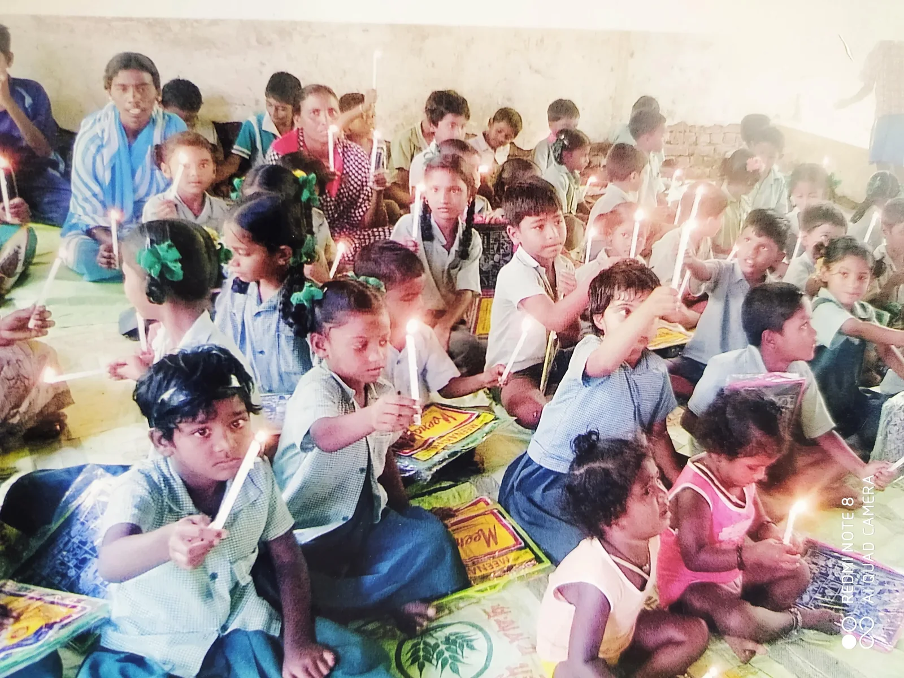
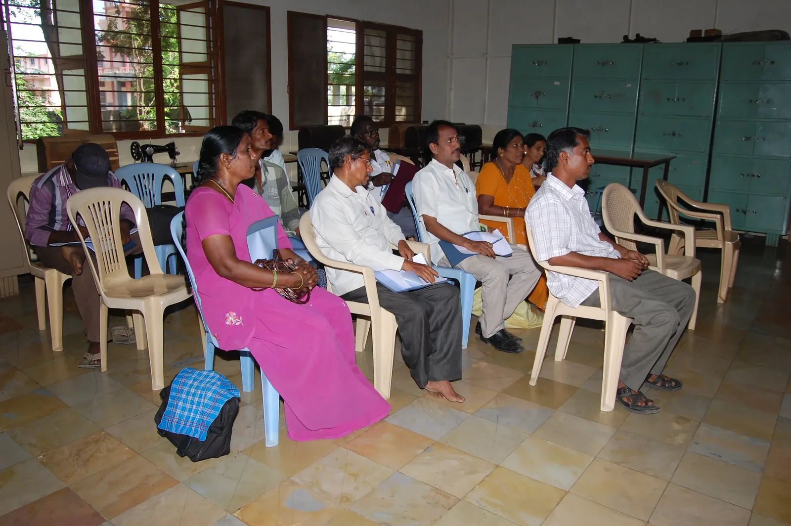
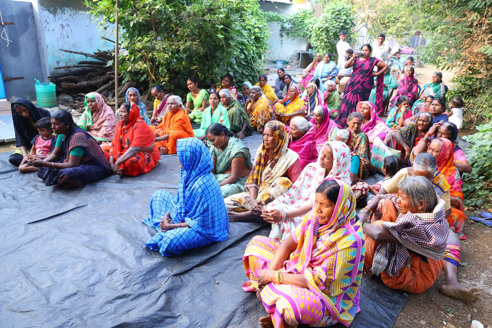

Public Disclosures • Governance & Compliance
Ethical Stewardship, Governance & Statutory Compliance
Operating as a non-commercial, honorary-governed society since 1993, DWA upholds democratic General Body oversight, statutory compliance, verified project records, and strict safeguarding protocols.

01 • Statutory Identifiers & Oversight
Legal Registrations & Statutory Compliance
DWA maintains active society registration, Ministry of Home Affairs FCRA clearance, and public nonprofit registry verification under Indian law.
- Society Registration No.
- 384/1993 Societies Registration Act XXI of 1860 (22 June 1993, Kurnool)
- FCRA Registration (MHA)
- 010270166 Valid through 30 September 2028
- PAN
- AAKFD2353B
- NITI Aayog NGO Darpan
- AP/2021/0276162
- Independent Auditor
- Sivapuram Subramanyam & Co., Chartered Accountants, Nandyal CA Membership No. 029910

02 • Institutional Architecture
Governance Structure & Bylaw Safeguards
General Body (Universal Adult Membership 18+)
Convenes at least annually to review programme performance, approve statutory filings, and elect leadership every three years.
7-Member Executive Managing Committee
President, Vice President, Secretary, Treasurer & 3 Directors • Quarterly meetings with strict minimum quorum of 5 members.
Independent Statutory Audit
Sivapuram Subramanyam & Co., Chartered Accountants (Nandyal) conducting annual independent statutory examinations.
Program Execution Cadre
Project Officers, technical trainers, and village volunteers implementing projects with SHGs and primary schools.
General Body Supremacy & 3-Year Cycles
All registered members admitted irrespective of caste, creed, or religion review annual reports and elect the 7-member Executive Committee every three years.
Quarterly Quorum Controls
The Executive Committee must convene at least once every three months with a mandatory minimum quorum of five members to prevent unilateral decisions.
Dual-Signatory Oversight
No single individual holds autonomous administrative authority; official society decisions and accounts operate under joint signatory governance.
Non-Commercial & Dissolution Clause
Office bearers serve voluntarily with zero personal profit shares. Upon dissolution under registered bylaws, all remaining assets transfer strictly to another charitable non-profit.
03 • Project Portfolio by Status
Ongoing & Completed Projects
DWA distinguishes active funded work from completed historical projects so supporters always have an accurate record of current operations.
| Status | Project Title & Scope | Location & Period | Donor / Partner Named in Records |
|---|---|---|---|
| Ongoing | Women’s Banking & Entrepreneurship Programme 12-month cohort enterprise training, financial/UPI inclusion, and climate-resilient sheep-rearing micro-enterprises. |
Sirivella & Rudravaram 2024–2026+ |
Grace TPTC Foundation |
| Completed | COVID-19 Emergency Food Security & Relief 30 kg dry-ration survival kits, youth happiness kits, clothing, and dignity support for vulnerable households. |
Kurnool Rural Clusters 2020–2022 |
Divya Foundation |
| Completed | Primary School Support & Vocational Tailoring Learning materials, student merit support, and village tailoring/craft training. |
Sirivella & Bandi Atmakur 2017–2020 |
Community & Donor Supported 10 Government Primary Schools |
| Completed | Dairy Development Project Smallholder dairy cattle livelihood initiative supporting rural family income. |
Sirvel & Govindapalle FY 2016–17 |
Global Compassion Inc. (USA) |
| Completed | Adult Functional Literacy & Environmental Sanitation Literacy centres, NEAC water literacy (“Water – Elixir of Life”), and solid waste drives. |
Kurnool Rural Panchayats 2001–2012 |
Community & Public Awareness Drives |

04 • Field Documentation & Safeguards
Events, Activity Log & Photo Archive
DWA documents field workshops, kit distributions, SHG meetings, and community assemblies. Photographs and participant stories are published strictly with informed consent, verified dates, and heightened safeguards for images involving children.



05 • Public Registries & Policies
External Verification & Website Disclosures
Supporters and institutional partners can independently verify DWA’s registration records across public Indian and international nonprofit directories.
